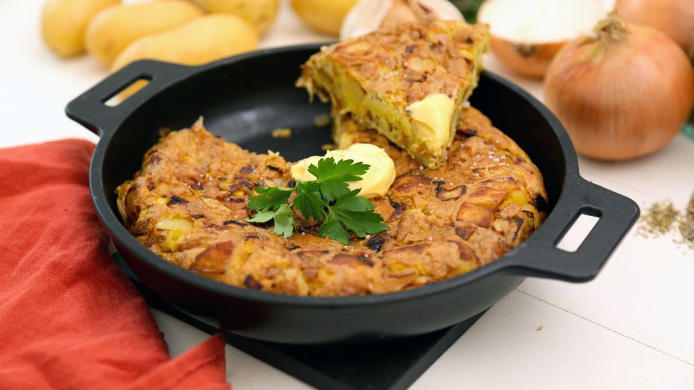

Tortilla
 2 servings
2 servings 35 mins
35 mins Source
Source Veggie
Veggie Salty
Salty

- oil
- pepper
- sel
- herbes de Provence
5eggs
Beat the eggs into an omelette in a salad bowl, adding salt, pepper and herbes de Provence.
½onion3potatoes
Cut the onion into thin strips, the potatoes into squares and set aside.
Heat oil in a frying pan, when the oil is hot, cook the potatoes over low heat and brown them at the end of cooking (check with the tip of a fork) over medium heat.
Add and brown the onions.
Pour the beaten eggs into the pan.
Turn the omelette over as best you can on the other side (either using a plate or by cutting it into four pieces and turning them over with a spatula) and cook it.